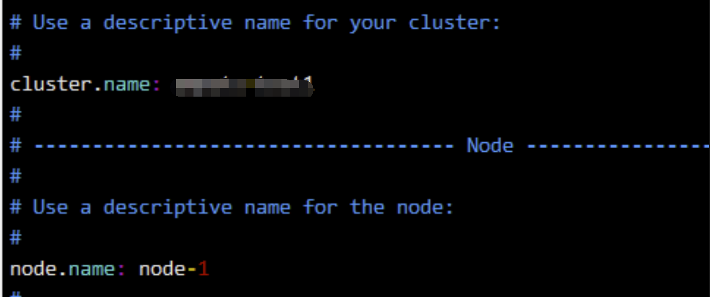
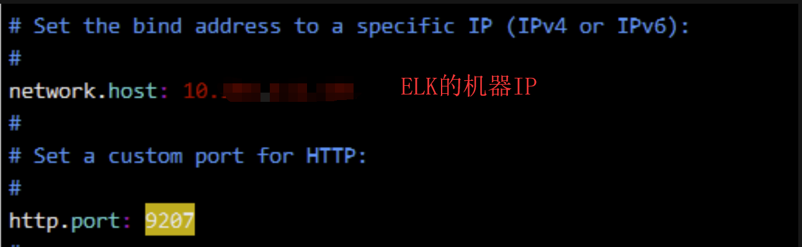
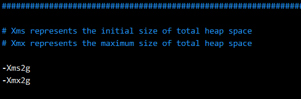
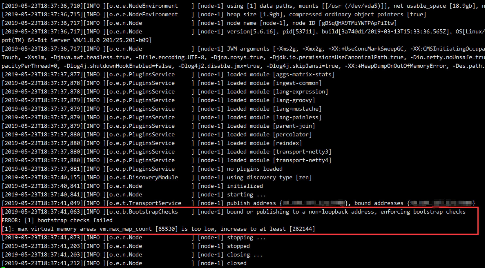
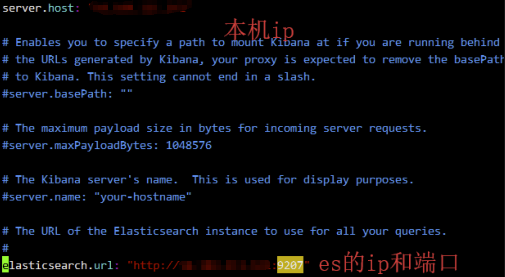
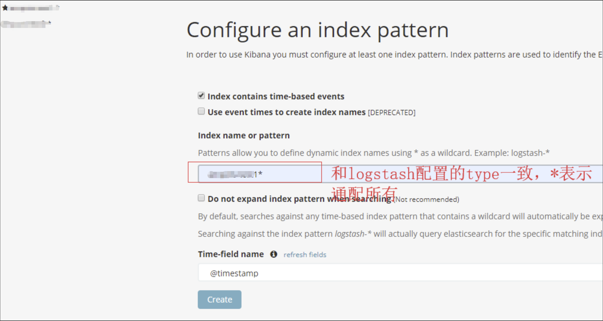

前段时间协助业务平台搭建了一个ELK日志系统，帮助测试人员查看、跟踪业务日志，将搭建过程简易整理。
软件准备
ElasticSearch：elasticsearch-5.0.0.tar.gz
Logstash：logstash-5.0.0.tar.gz
Kibana：kibana-5.0.0-linux-x86_64.tar.gz
以上软件都可以通过ES官网下载，三个软件版本需要一致
安装ElasticSearch
创建elk用户（es必须非root用户启动，es的配置/启动都以elk用户完成）
1
2
3groupadd elk
useradd -g elk elk
passwd elk解压elasticsearch-5.0.0.tar.gz到/usr/local/elk/elasticsearch-5.0.0
修改配置文件/config/elasticsearch.yml，设置集群名称、节点名称、ip和端口（自行变更，这里改为9207）


修改jvm配置/config/jvm.options，把jvm的大小调整为2G

修改启动文件/bin/elasticsearch，首行增加以下配置（JDK的路径自行替换）
1
2JAVA_HOME="/usr/java/jdk1.8.0_201/"
JAVA_OPTS=""启动es
1
/usr/local/elk/elasticsearch-5.0.0/bin/elasticsearch &
如果出现以下异常：
1
2
3
4
5
6
7
8
9
10
11
12
13
14
15java.lang.UnsupportedOperationException: seccomp unavailable: CONFIG_SECCOMP not compiled into kernel, CONFIG_SECCOMP and CONFIG_SECCOMP_FILTER are needed
at org.elasticsearch.bootstrap.SystemCallFilter.linuxImpl(SystemCallFilter.java:342) ~[elasticsearch-5.0.0.jar:5.0.0]
at org.elasticsearch.bootstrap.SystemCallFilter.init(SystemCallFilter.java:617) ~[elasticsearch-5.0.0.jar:5.0.0]
at org.elasticsearch.bootstrap.JNANatives.tryInstallSystemCallFilter(JNANatives.java:258) [elasticsearch-5.0.0.jar:5.0.0]
at org.elasticsearch.bootstrap.Natives.tryInstallSystemCallFilter(Natives.java:113) [elasticsearch-5.0.0.jar:5.0.0]
at org.elasticsearch.bootstrap.Bootstrap.initializeNatives(Bootstrap.java:111) [elasticsearch-5.0.0.jar:5.0.0]
at org.elasticsearch.bootstrap.Bootstrap.setup(Bootstrap.java:195) [elasticsearch-5.0.0.jar:5.0.0]
at org.elasticsearch.bootstrap.Bootstrap.init(Bootstrap.java:342) [elasticsearch-5.0.0.jar:5.0.0]
at org.elasticsearch.bootstrap.Elasticsearch.init(Elasticsearch.java:132) [elasticsearch-5.0.0.jar:5.0.0]
at org.elasticsearch.bootstrap.Elasticsearch.execute(Elasticsearch.java:123) [elasticsearch-5.0.0.jar:5.0.0]
at org.elasticsearch.cli.EnvironmentAwareCommand.execute(EnvironmentAwareCommand.java:70) [elasticsearch-5.0.0.jar:5.0.0]
at org.elasticsearch.cli.Command.mainWithoutErrorHandling(Command.java:134) [elasticsearch-5.0.0.jar:5.0.0]
at org.elasticsearch.cli.Command.main(Command.java:90) [elasticsearch-5.0.0.jar:5.0.0]
at org.elasticsearch.bootstrap.Elasticsearch.main(Elasticsearch.java:91) [elasticsearch-5.0.0.jar:5.0.0]
at org.elasticsearch.bootstrap.Elasticsearch.main(Elasticsearch.java:84) [elasticsearch-5.0.0.jar:5.0.0]在配置文件增加以下配置：
1
2bootstrap.memory_lock: false
bootstrap.system_call_filter: false如果出现以下提示：

需要修改系统的连接数，在/etc/sysctl.conf 文件中直接修改，增加配置项
1
vm.max_map_count=262144
安装Logstash
解压到/usr/local/elk/logstash-5.0.0/
修改config/jvm.options，增加以下配置：
1
-Dcom.sun.management.snmp.port=8046
修改bin/logstash.lib.sh，首行增加以下配置（JDK路径自行替换）：
1
2export JAVA_CMD="/usr/java/jdk1.8.0_201/bin"
export JAVA_HOME="/usr/java/jdk1.8.0_201/"修改/config/logstash.conf，配置es和grok表达式（根据实际业务日志配置）
1
2
3
4
5
6
7
8
9
10
11
12
13
14
15
16
17
18
19
20
21
22
23
24
25input {
file {
type => "tomcat-logs-1"
path => "/usr/local/tomcat/logs/catalina.out" #日志文件路径
codec => multiline {
pattern => "^\s"
what => "previous"
}
start_position => "beginning"
}
}
filter {
grok {
}
}
output {
elasticsearch {
hosts => ["ip:port"] #es的ip:port
action => "index"
codec => rubydebug
index => "%{type}-%{+YYYY.MM.dd}" #生成的索引名称
template_name => "%{type}"
}
}启动logstash
1
nohup /usr/local/elk/logstash-5.0.0/bin/logstash -f /usr/local/elk/logstash-5.0.0/config/logstash.conf &
安装Kibana
解压到/usr/local/elk/kibana-5.0.0-linux-x86_64
修改/config/kibana.yml

启动kibana
1
/usr/local/elk/kibana-5.0.0-linux-x86_64/bin/kibana &
启动后，打开Kibana面板，配置index

点击create即可生成实例
最后
- 其他机器要采集日志，只需安装logstash并修改logstash.conf文件将日志推送到es即可
- 防止日志文件过大，es按日期每天生成一个实例，请定期清理es的日志实例（可用脚本实现）